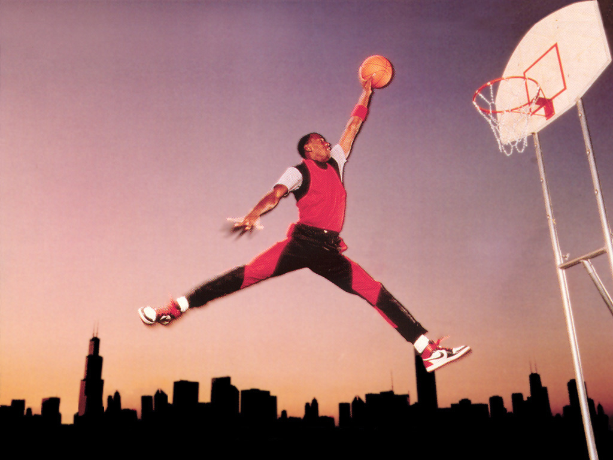
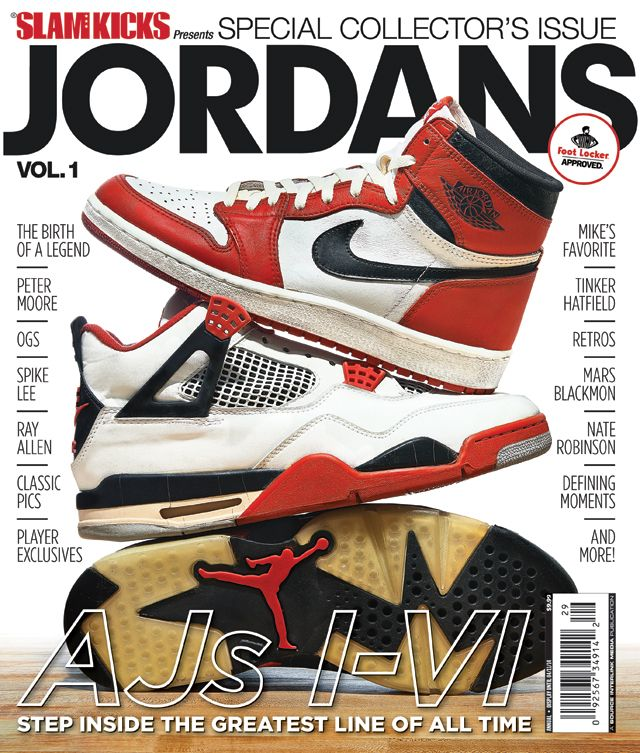

En un inicio, junto a su entrenador de atletismo, Phil Knight decidió fundar "Blue Ribbon Sports", marca que años después se convertiría en Nike. La entonces estudiante de diseño Carolyn Davidson fue quien realizó el logotipo por tan sólo 35 dólares, a este logo se le conoce como "Swoosh" y está inspirado en una diosa griega. Más adelante conforme Nike fue creciendo, Phil Knight le regalaría acciones de la compañía.

Nike es una marca reconocida por patrocinar a grandes deportistas, de hecho el patrocinio a Michael Jordan en 1985 hizo que la marca aumentara de forma abrupta sus ventas, sobre todo ante la gran competencia con Reebok y Adidas. El éxito de los Air Jordan alcanzó tal nivel que algunos modelos usados por el ex basquetbolista hoy en día han sido subastados en millones de dólares, como los Air Jordan XIII usados por el ex jugador de los Bulls en las finales de la NBA de 1998.
Incluso, hace tan sólo dos años unos Nike Air Ships usados por “Su Majestad” en 1984 se subastaron por casi 1.5 millones de dólares, mientras que en 2020 unos Nike Air Jordan 1 High alcanzaron los 615 mil dólares.

Para 1988 llegaría el famoso eslogan “Just Do It”, una frase motivadora dirigida a todas las personas que quieren ejercitarse, sin distinción de edad, color de piel o cualquier tipo de capacidad individual.